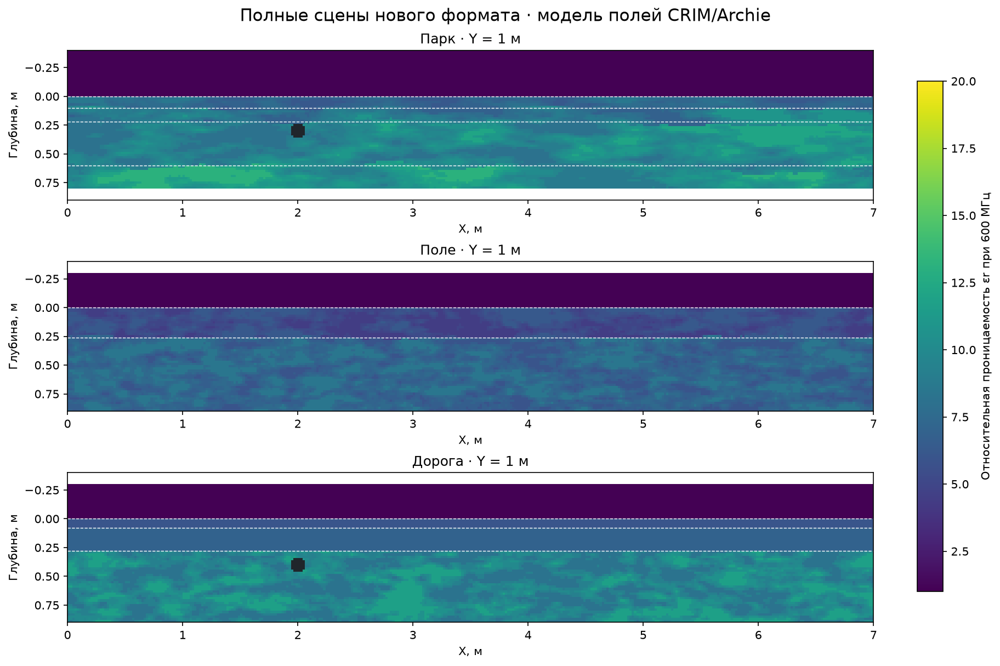

Парк, поле и дорога#
Полные примеры имеют размеры 7 × 4.8 × 1.2 м. Они используют один формат и одни команды; меняются слои, объекты и параметры грунта.
| Файл | Слои | Объекты |
|---|---|---|
examples/scenes/park.json |
Четыре минеральных горизонта, общая толщина 0.80 м | Три тестовые сферы |
examples/scenes/field.json |
Обрабатываемый верх 0.26 м и нижний слой 0.64 м | Пустая контрольная сцена |
examples/scenes/road.json |
Асфальт 0.08 м, основание 0.20 м, грунт 0.62 м | Три тестовые сферы |
Это сценарные толщины, а не универсальное устройство любого парка или дороги. Набор park-pilot.json использует такую же четырёхслойную модель парка на меньшей площади.

Здесь показана модель полей CRIM/Archie. Шкала — действительная относительная проницаемость при 600 МГц; чёрное — идеальный металл. Пунктир обозначает номинальные границы, а не отражённую волну.

Жёлтый круг — старт, красный квадрат — конец. Проекции объектов нанесены независимо от глубины горизонтального разреза.
python geodatagen.py init park-full --scene examples/scenes/park.json --trajectory examples/trajectories/snake.json
python geodatagen.py init field-full --scene examples/scenes/field.json --trajectory examples/trajectories/snake.json
python geodatagen.py init road-full --scene examples/scenes/road.json --trajectory examples/trajectories/snake.json
Для Peplinski добавьте --mode native_peplinski и выберите новое имя опыта. Для случайной расстановки используйте park-random.json либо park-poisson.json.
Старые 4500 A-сканов доступны в архиве v1.0.0. Они рассчитаны по прежним конфигурациям и не являются результатом сцен на этой странице.